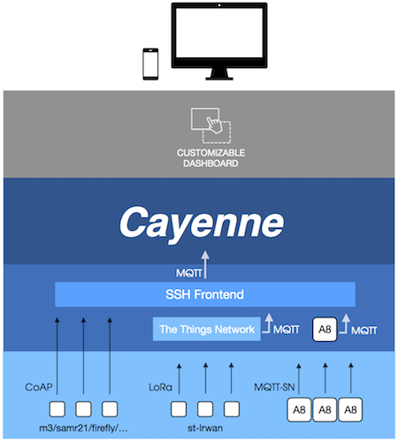

ResCom Summer School 2019
Lab 1: FIT IoT-LAB
25th June 2019
FIT IoT-LAB overview 20 min

Full presentation available here
FIT IoT-LAB is a testbed dedicated to the Internet of Things which allows large scale and reproductible experiments over more than 2000 nodes distributed along 6 sites in France. It offers a large panel of MCU (MSP430, STM32, Cortex A8) and radio chip (TI CC2420, TI CC1101, AT86RF231). This presentation will introduce the concepts and fonctionalities of the testbed in order to better understand use cases users could achieve on FIT IoT-LAB.
The platform can be accessed remotely through the web portal or using provided command-line tools. In addition, the platform offers a hosted environment on SSH front-ends, featuring pre-installed CLI Tools, target architectures cross-compiler toolchains, experiments results, and access to devices serial ports.
Source code and technical documentation is available on github.com/iot-lab.
Getting started with www.iot-lab.info/tutorials/
1. Authentication Settings 5 min
- Get your temporary ResCom login / password for the Lab1
- Log into the Webportal
- Configure Your SSH Access in the Webportal
2. First Experiment 10 min
3. Monitoring 20 min
- For Linux Users: ready to go!
- For Mac Users: install XQuartz
- For Windows Users: install Xming , see tutoriel with Putty
- Monitor power consumption (i.e., LED blinking, radio TX)
- Monitor radio signal (i.e., RSSI during radio communication). NOTE: go directly to step 4 and do not recompile firmware.
4. Networking with Contiki OS 35 min
| Login | Channel | PANID | IPv6 /64 subnet |
| rescom1 | 11 | 0xff01 | 2001:660:5307:3101::/64 |
| rescom2 | 12 | 0xff02 | 2001:660:5307:3102::/64 |
| rescom3 | 13 | 0xff03 | 2001:660:5307:3103::/64 |
| rescom4 | 14 | 0xff04 | 2001:660:5307:3104::/64 |
| rescom5 | 15 | 0xff05 | 2001:660:5307:3105::/64 |
| rescom6 | 16 | 0xff06 | 2001:660:5307:3106::/64 |
| rescom7 | 17 | 0xff07 | 2001:660:5307:3107::/64 |
| rescom8 | 18 | 0xff08 | 2001:660:5307:3108::/64 |
| rescom9 | 19 | 0xff09 | 2001:660:5307:3109::/64 |
| rescom10 | 20 | 0xff0a | 2001:660:5307:310a::/64 |
| rescom11 | 21 | 0xff0b | 2001:660:5307:310b::/64 |
| rescom12 | 22 | 0xff0c | 2001:660:5307:310c::/64 |
| rescom13 | 23 | 0xff0d | 2001:660:5307:310d::/64 |
| rescom14 | 24 | 0xff0e | 2001:660:5307:310e::/64 |
| rescom15 | 25 | 0xff0f | 2001:660:5307:310f::/64 |
| rescom16 | 26 | 0xff10 | 2001:660:5307:3110::/64 |
| rescom17 | 11 | 0xff11 | 2001:660:5307:3111::/64 |
| rescom18 | 12 | 0xff12 | 2001:660:5307:3112::/64 |
| rescom19 | 13 | 0xff13 | 2001:660:5307:3113::/64 |
| rescom20 | 14 | 0xff14 | 2001:660:5307:3114::/64 |
| rescom21 | 15 | 0xff15 | 2001:660:5307:3115::/64 |
| rescom22 | 16 | 0xff16 | 2001:660:5307:3116::/64 |
| rescom23 | 17 | 0xff17 | 2001:660:5307:3117::/64 |
| rescom24 | 18 | 0xff18 | 2001:660:5307:3118::/64 |
| rescom25 | 19 | 0xff19 | 2001:660:5307:3119::/64 |
| rescom26 | 20 | 0xff1a | 2001:660:5307:311a::/64 |
| rescom27 | 21 | 0xff1b | 2001:660:5307:311b::/64 |
| rescom28 | 22 | 0xff1c | 2001:660:5307:311c::/64 |
| rescom29 | 23 | 0xff1d | 2001:660:5307:311d::/64 |
| rescom30 | 24 | 0xff1e | 2001:660:5307:311e::/64 |
Extra/Going farther: Build a complete IoT application
5. Build a complete IoT application
This final exercices aims to use different hardwares / radio technologies / protocols / OSes in order to build an IoT application from data production to cloud dashboard. IoT-LAB testbed will produce sensors data that will converge to Cloud servers through IoT standard protocols. As a final result, users could observe live sensors data on their custom dashboard.

Tips and Links:
- Cayenne dashboard: https://mydevices.com/cayenne/features/
- Cayenne mqtt python library: https://pypi.python.org/pypi/cayenne-mqtt/1.1.0
- Coap python library: https://github.com/Tanganelli/CoAPthon/blob/master/README.md
- Paho-mqtt python library: https://pypi.python.org/pypi/paho-mqtt/1.3.1
Full Solution